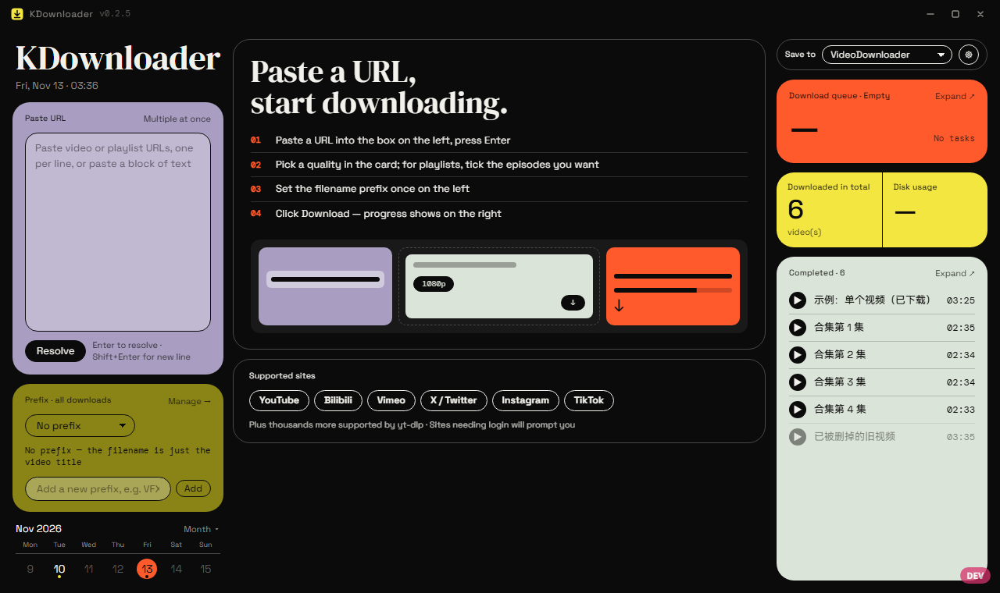
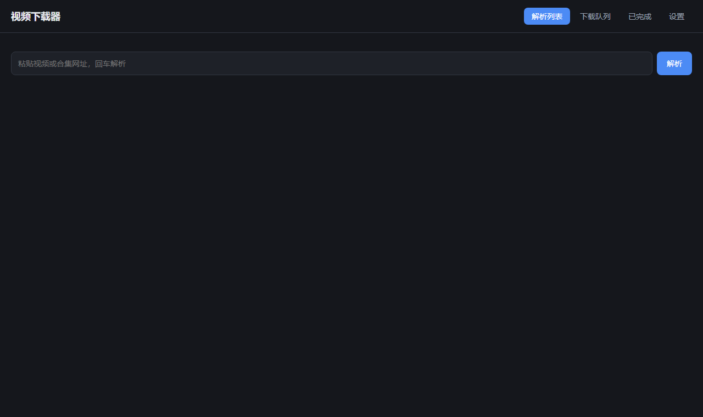

Seven days, one desktop video downloader, and a frontend rebuilt from scratch while the backend kept running. What worked, what broke, and what is still missing at v0.2.5.七天，一个桌面视频下载器，一套在后端照常运行的情况下推倒重做的前端。记录 v0.2.5 之前做对了什么、弄坏了什么、还缺什么。
Abstract. KDownloader is a Windows desktop video downloader: Python and yt-dlp behind a pywebview window, plain HTML/CSS/JS in front, shipped as one portable exe. The backend was stable by 2026-11-07. The interface was not. This report follows the interface from a nearly empty four-tab page to the five-color card system at v0.2.5: the layout studies, the icon sheets, the font sets cut from 27 to 5, the six-step onboarding that took five rounds, the night 0.2.0 shipped a program that could not close, the rollback that cost 2,367 lines of tests, and the batches that rebuilt it one contract at a time.摘要。KDownloader 是一个 Windows 桌面视频下载器：pywebview 窗口后面是 Python 和 yt-dlp，界面是原生 HTML/CSS/JS，最后打成单个便携 exe。后端在 2026-11-07 已经稳定，界面还没有。这篇记录界面怎么从一个几乎空白的四页签页面，走到 v0.2.5 的五色卡片系统：布局样式稿、图标挑选稿、从 27 套裁到 5 套的字体、改了五轮的六步引导、0.2.0 交付了一个关不掉的程序的那一晚、丢掉 2367 行测试的回退，以及靠一份份契约把信任重新建起来的分批。
What I take from it: visual work needs a human eye, engineering work needs a written contract, and a green test suite only proves that the mocks agree with themselves.我的结论：视觉要人眼看，工程要写死的契约，测试全绿只能证明假接口自洽。
Pick a stage to see what changed. Every screenshot opens full size; press Esc to close it.点一个阶段看当时发生了什么。每张截图都能放大；按 Esc 关闭。
The download engine came first. From v0.1.0 through v0.1.12 — all dated 2026-11-07 or earlier — the backend gained queue management, batch and playlist downloads, per-task retry, a four-tab shell, a developer log that rotates every 500 lines, cookie-based login in an embedded window, network retry and a quality fallback. v0.1.12 was recorded as stable with 119 tests passing.下载引擎先做。从 v0.1.0 到 v0.1.12（都记在 2026-11-07 或更早），后端陆续有了队列管理、批量与合集下载、单任务重试、四页签外壳、每 500 行轮换的开发者日志、内置窗口的 cookies 登录、网络重试和清晰度兜底。v0.1.12 被记为稳定，119 个测试全过。
The old web/ frontend was a shell: four tabs, a blue primary button, and a page that was mostly empty. It worked. It looked like a placeholder.旧 web/ 前端只是个壳：四个页签、一个蓝色主按钮，页面大部分是空的。它能用，但看起来像占位符。
So the visual work started on a separate track. web_v2 would be built beside the old interface without touching the backend, and the backend kept its 119 green tests while the front end was torn down.于是视觉重做另起一条线：web_v2 和旧界面并存，不动后端；前端推倒重来的时候，后端那 119 个测试仍然是绿的。
Scope was fixed early: no DRM bypass, no paywall or anti-bot work. Kubb.tv was logged as an access-control boundary and left alone.范围一开始就定死：不绕过 DRM、不碰付费墙和反爬。Kubb.tv 被记为访问控制边界，只记录，不实现。


web/ · v0.1.x v0.2.5On 2026-11-07 the interface work started with pictures, not code. Layout A put the paste box, video card, playlist, queue summary and calendar on one dashboard. Layout B kept the tabs, arranged parse results in a card grid, and pinned the queue on the right. Both used the five card colors for the first time.2026-11-07，界面从图开始，不从代码开始。方案 A 把粘贴框、视频卡、合集、队列摘要和日历摊在一屏；方案 B 保留顶部页签，解析结果按卡片格排，右侧固定队列。五色卡片在这两张图里第一次出现。
The settings page went through four layouts. A gave the download folder a full row. B stacked concurrency and language on the right. C flattened the folder card and put four small cards in one row. D moved the filename prefix to the top right, widened the folder card, and aligned four cards below. Kurt picked D.设置页走了四套布局。A 让下载文件夹占满一整行；B 把同时下载和语言叠在右侧；C 压扁文件夹卡，四个小卡并排；D 把文件名前缀移到右上，文件夹更宽，下半部分四卡对齐。Kurt 选了 D。
The icon sheet put old, new A, new B and hover side by side for every action, all at 1.5px. Folder A, delete A, broom B and a circled exclamation mark for failure made the cut. A light-theme copy checked that the lines stayed visible on parchment.图标挑选稿把每个动作的旧版、新 A、新 B 和悬停并排放在一起，线宽统一 1.5。文件夹 A、删除 A、扫帚 B、失败的圆圈叹号入选。同一张稿还有浅色版本，用来确认线条在米色底上仍然看得清。
The rule that came out of this: when a change has several visual answers, draw them all and let Kurt choose. A mockup costs minutes; a finished screen that gets rejected costs a day.这一步留下了规矩：凡是有多个视觉方案的改动，先把图都画出来让 Kurt 挑。样式稿只要几分钟；做完再被推翻要一天。
Version 1 was approved on 2026-11-07 and fixed the type: DM Serif Display for English headlines, Noto Serif SC for Chinese, Space Grotesk for body, DM Mono for tables, and body type for big numbers. Error strings moved to English with localizeBackend() mapping the backend's Chinese values. Every row button became a 30px circle.版本 1 在 2026-11-07 通过，先把字体定下来：英文标题 DM Serif Display，中文标题 Noto Serif SC，正文 Space Grotesk，等宽 DM Mono，大号数字改用正文字体。报错统一走英文，由 localizeBackend() 映射后端中文值；队列和已完成里的行按钮全部改成 30px 圆形图标。
Version 2 added one shared error block: a red dot and text in dark, a thin dark frame on a light background. Supported sites became bold outlined tags; the product name became KDownloader in English and 视频下载器 in Chinese, with no space. The same day added a light theme, L2 parchment — cream background, card shadows, selectable in settings as light, dark or follow system.版本 2 加了统一的报错块：深色是红点加文字，浅色是浅底加细线框。支持的网站改成粗体线框标签；软件名定为英文 KDownloader、中文「视频下载器」，中间不留空格。同一天加上浅色主题「L2 图纸米杏」：米色底、卡片投影，设置里可选浅色、深色或跟随系统。
Version 3 brought motion, one icon set, and the first-run guide. Motion covered page changes, hover, press, expand and collapse, queue shake and number bounce, and switched off under prefers-reduced-motion. The guide had six steps — language, theme, folder, login, ffmpeg, a three-step tutorial — and morphed into the home screen at the end. It took at least five rounds: flicker, page-up versus page-down, glass blur versus abstract bars, a two-stage morph, and a dark Recommended badge.版本 3 做动效、图标和首次引导。动效覆盖页面切换、悬停、按下、展开折叠、队列抖动和数字弹跳，prefers-reduced-motion 时全部关掉。引导六步：语言、主题、文件夹、登录说明、ffmpeg 说明、三步教程，最后变形回首页。它至少改了五轮：闪烁、上下翻页方向、毛玻璃还是抽象条、两段式变形、深色「推荐」标签。
Version 4, session A, cut the font sets from 27 to 5 without dropping glyphs. The app went from 53 MB to 20 MB. The same session split the DEV panel into its own file, moved mockups into ui_dev/mockups/, added an offline snapshot tool, and wrote tests/test_contract.py: frontend calls must be a subset of the mock API, and the mock a subset of the real backend.版本 4 的会话 A 把字体从 27 套裁到 5 套，不裁字，安装体积从 53MB 降到 20MB。同一个会话把 DEV 面板拆成独立文件，把样式稿挪进 ui_dev/mockups/，加了离线快照工具，并写下 tests/test_contract.py：前端调用的接口必须是假接口的子集，假接口必须是后端真实接口的子集。
Version 4 was meant to connect web_v2 to the real backend. It got split into session A, frontend only, and session B, the merge. When session B checked the handoff on 2026-11-12, B1–B7 had already been done in the 11-08 baseline; the notes were stale. Three tests were added, and 144 passed. Kurt added two items on the spot: backend Chinese values such as stage should become English code values, and a failed ffmpeg run should offer a retry button.版本 4 的原意是把 web_v2 和真后端接通。它被拆成会话 A（只做前端）和会话 B（融合）。2026-11-12 会话 B 核对时发现 B1–B7 其实早在 11-08 的基线里做完了，只是交接文档没更新；补了 3 个测试，144 个全过。Kurt 当场追加两条：后端的 stage 等中文值改成英文代码值；ffmpeg 失败后要有重试按钮。
0.2.0 had already shown the cost of moving both sides at once. From 11-12 the rule was four steps, never parallel.0.2.0 已经演示过两边同时动的代价。从 11-12 起，凡是两边都要改的改动固定四步，不并行。
Change web_v2 and the mock API together; write the contract in docs/ui/api-contract.md.同时改 web_v2 和假接口，把接口写进 docs/ui/api-contract.md。
Kurt checks the front end in the mock preview or a screenshot.Kurt 在假接口预览或截图里验前端。
The backend implements the contract and does not touch the front end.后端照契约实现，不改前端。
Run the real app and verify both sides together.接通真程序，一起验。
The contract test is what made the rule real. tests/test_contract.py scans frontend calls, the mock API and the real backend Api with AST, and requires the containment to hold. Its whitelist shrank over time. It was the most valuable check of the merge: the front end could no longer call an endpoint the backend did not have, and the mock could not promise more than the backend delivered.接口对账测试让这条规矩真正生效。tests/test_contract.py 用 AST 扫前端调用、假接口和后端 Api，要求包含关系成立，白名单逐步清空。这是融合期最有价值的一道检查：前端不能再调用后端没有的接口，假接口也不能承诺后端做不到的事。
On the night of 2026-11-08, phase one ran several lines at once: layout, stats card, format table, runtime, packaging, docs. It produced 0.2.0 with a frameless window, tray close, window geometry, DEV factory reset, a preview exe and a build script. Commit 1786a6f alone touched 28 files, +1,979 and −101 lines.2026-11-08 夜间，阶段一几条线同时推进：布局、统计卡、格式表、运行时、打包、文档。产出 0.2.0：无边框窗口、托盘关闭、窗口几何、DEV 恢复出厂、预览 exe 和打包脚本。仅提交 1786a6f 就改了 28 个文件，+1979 / −101 行。
At 01:24 on 11-09 Kurt stopped the night loop. The full measure suite — 2,148 assertions, 8 minutes 17 seconds — had run four times that night, about 33 minutes wasted. A subtask crashed and its whole line was redone. Night2 ran from 01:28 to 01:57, created a private repository, pushed branches, and left a release draft unpublished.2026-11-09 01:24，Kurt 叫停了夜间循环。全量 measure 共 2148 条断言、8 分 17 秒，那晚被重复跑了 4 次，约浪费 33 分钟。一个子任务异常退出，整条线重做。01:28–01:57 又跑了一轮 night2，建了私有仓库、推了分支、留了一份没发布的 Release 草稿。
In the morning Kurt opened 0.2.0. The program would not close: the title-bar close button and Alt+F4 both did nothing. DEV mode locked the interface to English. A first launch with nothing downloaded asked whether to minimize to tray.第二天上午 Kurt 打开 0.2.0。程序关不掉：标题栏的关闭按钮和 Alt+F4 都没反应。DEV 模式一开，界面锁死英文。首次启动什么都还没下，就弹窗问要不要最小化到托盘。
At 09:28 the tree was rolled back to 0.2.1 using an old snapshot. The bug was gone, and so were 9 test files (about 2,367 lines), measure.js, net_smoke.py, tests/_isolation.py, and QA fixes 39/41/42/43. An audit then checked 246 requirements one by one.09:28，仓库用一个旧快照整树回退到 0.2.1。bug 没了，9 个测试文件（约 2367 行）、measure.js、net_smoke.py、tests/_isolation.py，以及 39/41/42/43 等 QA 修复也一起没了。随后审计逐条核对了 246 条需求。
The night loop came back with hard rules. The main agent only takes 1–3 minute jobs; long work goes to subagents or the background; at most one expensive agent runs at a time; the next job is dispatched the moment its dependency lands; and every run has a hard deadline.夜间循环后来补了硬规则：主 agent 只做 1–3 分钟的短活；长任务交给子 agent 或后台；高消耗 agent 同一时间只允许一个；依赖一完成就派下一单；每一轮都有硬截止。
Kurt moved the close flow to the front of the queue for one reason: the worst bug of the project was a program that would not exit. The first click on the close button now opens a dialog — minimize to tray, quit, or cancel — with tray highlighted by default. The choice is remembered and can be changed in settings; quitting with downloads running asks again. Three bottom lines keep any path from hanging: if the dialog does not appear within 3 seconds, quit; if tray was chosen but tray is unavailable, quit; Alt+F4 and the taskbar close take the same path.Kurt 把关闭流程无限往前提，理由只有一个：项目最严重的 bug 就是程序关不掉。第一次点关闭按钮会弹窗：缩到托盘、退出、取消，默认高亮缩到托盘；选择会被记住，设置里能改；有任务在跑步退出要再确认。三条底线保证任何路径都不卡住：弹窗 3 秒没出来直接退；选了托盘但托盘不可用直接退；Alt+F4 和任务栏关闭走同一套规则。
Kurt also changed the exit itself: make it fast. Quitting ends the download subprocess only. It does not cancel tasks, clean up, or wait, and partial files stay on disk. The front end got a mockup first — three title bars, two dialogs, tray menu options — then the backend implemented the frameless window, drawn title bar, eight-way resize, tray, single instance and geometry restore. A real-window test passed on 2026-11-12 and v0.2.2 shipped. The tray icon looked wrong and became todo 64.退出本身也改了：要快。退出只结束下载子进程，不取消任务、不清理、不等待，半截文件留在磁盘上。前端先出样式稿——三种标题栏、两种弹窗、托盘菜单方案——后端随后实现无边框窗口、自绘标题栏、八方向拉伸、托盘、单实例和窗口几何恢复。2026-11-12 真窗口实测通过，发 v0.2.2。托盘图标看不清，记成待办 64。
Batch 1 was the first test of the new rule. The front end landed on 11-12 with the mock API (8dff4bb); the backend followed on 11-13 against the contract (bb77796), restoring tests/_isolation.py and reaching 209 backend tests. The queue's big number now shows whole-batch progress, so it no longer falls to 0% after every video. stage, quality and kind are English code values. Failed rows group by error_kind, with the raw error collapsible, and an ffmpeg failure gets a retry button. The stats card opens the download folder, and the DEV panel has a factory reset. v0.2.3.第 1 批是新规矩的第一次实测。前端 11-12 连同假接口先落地（8dff4bb）；后端 11-13 照契约跟上（bb77796），恢复 tests/_isolation.py，后端测试达到 209 个。队列大数字改成整批总进度，不再每完成一个视频回 0%。stage、quality、kind 改成英文代码值。失败行按 error_kind 分类，原文可折叠；ffmpeg 失败加「重试」。统计卡点击打开下载文件夹，DEV 面板有恢复出厂。发 v0.2.3。
Batch 2 was front end only, previewed on the mock and then shipped. One dialog system replaced 15 native confirm() calls. Dropdowns became drawn menus; option C won — black panel, thin frame, orange bar. The disk usage number got a small unit and shrinks to 18px when space runs out. The format table became compact and wraps at container width ≤420px. A new +N badge fades after 3 seconds with an odometer roll, the shake has two tiers (1–4 items, then 5 or more), and the summary card animates its height in 300ms. Start here follows the language. The light-theme dev log got a proper selection color. Completed rows no longer replay their animation at launch, and the download-to card no longer flies away at the end of onboarding. v0.2.4.第 2 批只改前端，先在假接口预览、Kurt 验过再发。统一的对话框系统替换了 15 处原生 confirm()。下拉改成自绘菜单，方案 C 胜出：黑底、细线框、橙色竖条。占用空间数字带小号单位，放不下自动缩到 18px。格式表变紧凑，容器宽度 ≤420px 时自动折成两行。新的 +N 角标 3 秒淡出，带里程表滚轮；抖动分两档（1–4 个，5 个以上）；摘要卡高度 300ms 平滑。Start here 跟随语言。浅色主题的开发者日志有了正确的选中态。启动时已完成不重播动画，引导结束的下载到小卡不再飞走。发 v0.2.4。
Todo 64 fixed the tray icon properly. The old .ico was a different design, and its small frames were broken — a crop of the top-left of the large image. assets/make_icon.py now draws every size from 16 to 256, the tray reads native frames by SM_CXSMICON, and tests/test_icon.py guards against a broken frame coming back.待办 64 把托盘图标真正修了。旧 .ico 是另一套设计，小尺寸帧本身是坏的——大图左上角的裁切。现在由 assets/make_icon.py 按 16–256 共九个尺寸逐帧重画，托盘按 SM_CXSMICON 取原生帧，并加了 tests/test_icon.py 防回归。
v0.2.5 turned the project into something you can hand to someone: one portable exe, built by PyInstaller with --onefile --windowed. No console window, its own icon, and only web_v2 bundled; the old web/ folder stays out.v0.2.5 把项目做成了能直接递给别人用的东西：一个便携 exe，PyInstaller --onefile --windowed 打包。没有黑窗，带自己的图标，只打 web_v2，旧 web/ 不进包。
Portable meant no installer, so the language question had no installation step to attach to. On first run, when there is no config.json, and after a factory reset, the app follows the Windows display language; if it cannot read it, it falls back to en. Existing configs keep their language. This replaced the earlier rule of defaulting new installs to English.便携就意味着没有安装过程，「安装时选语言」没有地方可做。首次启动（没有 config.json）和恢复出厂时，语言跟随 Windows 系统语言；读不到就退回 en。已有配置不动它的语言。这条覆盖了更早的「新装默认英文」。
A second exe runs the interface against a local HTTP server and the mock API, with its data directory pointed at a temp folder and command-line arguments passed as query parameters, such as onboarded=1&lang=zh. The preview build has its own file name, title and icon; it is the build used for design sign-off.另有一个预览 exe：本地 HTTP 服务加假接口，数据目录指向临时文件夹，命令行参数当查询参数用，例如 onboarded=1&lang=zh。预览版的文件名、标题和图标都和正式版区分，专门用来做界面验收。
Login became a singleton: a second request returns code: "login_open", and cookie polling dropped to every 3 seconds. If WebView2 is missing, the app reads the registry, shows a native dialog, runs the bundled Microsoft-signed installer silently, checks again, and only then exits with the download link.登录窗口改成单例：第二次调用返回 code: "login_open"；cookies 采集频率降到 3 秒。缺 WebView2 时，程序读注册表检测、弹原生对话框说明、静默运行内置的微软签名安装器、再检测一次，仍然失败才给出官网地址并退出。
Tests at the tag: 253 Python and 8 Node. The final run while writing the retrospective: 256 Python and 8 Node, all passing.打 tag 时是 253 个 Python 测试加 8 个 Node 测试。写复盘时最终实跑：256 个 Python 加 8 个 Node，全过。
0.2.0 passed its suite and could not close. Every stage now needs one real-window smoke test: launch, switch language, toggle DEV, click close, and watch the process exit.0.2.0 测试全过，但关不掉。现在每个阶段至少一条真实窗口冒烟：启动、切语言、开关 DEV、点关闭、看进程退出。
Agent-invented requirements became assertions, and the assertions made the mistake permanent. A test can protect a bug as easily as a feature.agent 自己补的需求写成了断言，断言又把错误固定下来。测试保护 bug 和保护功能一样容易。
Commit 1786a6f touched 28 files; when one flow broke, nothing could ship. Move the front end against the mock, the backend against the contract, then bring both together.1786a6f 一次改了 28 个文件；一条流程坏了，整批都发不出去。前端对假接口，后端对契约，最后再合起来。
The snapshot rollback removed 2,367 lines of tests and three QA tools along with the bug. Write the loss list before rolling back.整树回退把 bug 和 2367 行测试、三个 QA 工具一起删了。回退前先列清会丢什么。
Layouts A–D, an icon sheet, three title bars, three dropdowns. Mockups are cheap. Onboarding still took five rounds, and that was the right trade.布局 A–D、图标稿、三种标题栏、三种下拉。样式稿很便宜。引导还是改了五轮，这个交换是值得的。
A downloader that cannot quit is broken, whatever the tests say. Three bottom lines, and a fast exit that keeps partial files.关不掉的下载器就是坏的，测试说什么都没用。三条底线，加上保留半截文件的快速退出。
One portable exe removed the installer, and with it the place to choose a language, so first launch now follows Windows. WebView2 detection, tray icon frames and the login singleton are part of the experience, not build trivia.便携单 exe 去掉了安装包，也去掉了选语言的地方，所以首次启动改为跟随系统。WebView2 检测、托盘图标的每一个尺寸、登录窗口单例，都是体验的一部分，不是打包杂事。
A parallel story sits behind this project: the dispatch layer for DeepSeek grew from one rule into a full architecture, then was torn down to one skill and a turn cap. I wrote that one up separately in Kurt's Bitter Lesson.这个项目背后还有一条平行故事：派发 DeepSeek 的方案从一条规则长成整套架构，最后又被砍到只剩一个 skill 和回合上限。那一篇单独写在 Kurt's Bitter Lesson 里。
The v0.2.5 tag is a working build, not a finished product.v0.2.5 是一个能用的版本，不是完成品。